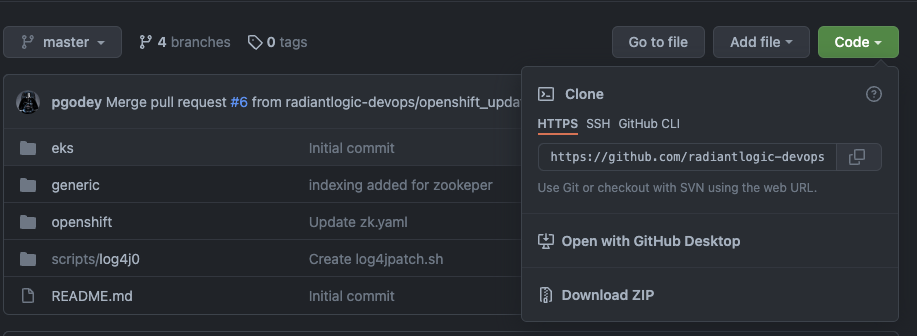
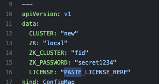
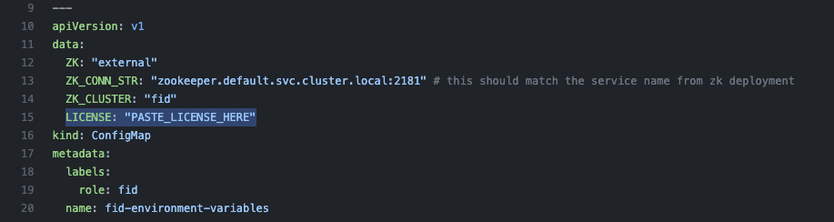

Kubernetes
Before you start
- FID or Zookeeper running locally on your machine are stopped.
- Make sure you have a running kubernetes cluster (minikube, EKS, AKS, GKE, k3s, k8s)
- If using minikube, see the minikube section
kubectl
- Make sure kubectl is configured to access the right cluster. You can verify that by running the following commands
kubectl cluster-info
kubectl get nodes
Manifest files
- Clone the kubernetes manifest samples repo
git clone https://github.com/radiantlogic-devops/kubernetes.git
- Alternatively you can download it from Github page, from internet browser go to
https://github.com/radiantlogic-devops/kubernetes.git

Standalone FID
Creating Namespace
kubectl create ns lab-00
Verify:
- To verify if the namespace is created, run the below command
kubectl get namespace
In the list of namespaces from the output you should see lab-00
Edit Manifest File (fid.yaml)
- From the cloned/downloaded folder navigate to kubernetes/generic/00-cluster-local-zk folder and open the manifest file
fid.yamlin your code editor. - Update the manifest file
kubernetes/generic/00-cluster-local-zk/fid.yamland paste the license key. Look forPASTE_LICENSE_HERE, replace it with a valid RadiantOne cluster license key and save the file.

- For Mac M1, update the image
radiantone/fid:7.4.0-arm64
Deploying Standalone FID
- To deploy the standalone FID, run the command below (make sure to follow "Edit Manifest File" before running the command below)
kubectl apply -f kubernetes/generic/00-cluster-local-zk/fid.yaml -n lab-00
Check status
- To get the status of pods (Pending/Running/Succeeded/Failed/Unknown)
kubectl get po -n lab-00
When the pod shows 1/1 running status, proceed to the next step. It could take anywhere from 2 to 5 minutes to start.
- To view logs
kubectl logs -f fid-0 -n lab-00
Accessing the Control Panel
** Open a new command prompt for port forwarding.
- To access the control panel of FID, run the command below
kubectl port-forward svc/fid-cp -n lab-00 7070 8089
Access the control panel at http://localhost:7070
Access the ADAP service at http://localhost:8089
The default username/password is
cn=Directory Manager
secret1234
Accessing LDAP Service
** Open a new command prompt for port forwarding.
- To access the LDAP service run the command below
kubectl port-forward svc/fid -n lab-00 2389
Access the LDAP service at ldap://localhost:2389 from your LDAP browser
The default username/password is
cn=Directory Manager
test1234
Cleanup
- Run the command below to delete the above FID deployment
kubectl delete -f kubernetes/generic/00-cluster-local-zk/fid.yaml -n lab-00
(If needed run this command to forcefully terminate the pod)
kubectl delete po/fid-0 -n lab-00 --force
Verify:
To verify that the FID deployment has been sucessfully deleted, run the command below
kubectl get all -n lab-00
You will no more see any zookeeper or fid pods. Once you verify that there are no zookeeper and FID pods, proceed to the next step
- Run the following command to delete the namespace created
kubectl delete ns lab-00
Verify:
To verify that the namespace has been deleted, run the command below
kubectl get namespace
You should no more see the "lab-00" namespace in the list of namepsaces.
FID with External Zookeeper
Creating Namespace
kubectl create ns lab-01
Edit Manifest File
- From the cloned/downloaded folder navigate to kubernetes/generic/02-cluster-ext-zk folder and open the manifest file "fid.yaml" in your code editor
- Update the manifest file
kubernetes/generic/02-cluster-ext-zk/fid.yamland update the following - License Key. Look for
PASTE_LICENSE_HERE, replace it with a valid RadiantOne cluster license key and save the file.

Deploying Zookeeper
- Run the command below to deploy zookeeper
kubectl apply -f kubernetes/generic/01-external-zk/zk.yaml -n lab-01
Check status
To get the status of pods (Pending/Running/Succeeded/Failed/Unknown)
kubectl get po -n lab-01
(use -w flag to watch the progress)
kubectl get po -n lab-01 -w
You will see three pods (named zookeeper-0/1/2)
When all the three pods show 1/1 running status, proceed to the next step
(Optional) Check if zookeeper is up and running, and which node is the leader
kubectl exec -it zookeeper-0 -n lab-01 -- bash -c "export JAVA_HOME=/opt/radiantone/rli-zookeeper-external/jdk/jre/;/opt/radiantone/rli-zookeeper-external/zookeeper/bin/zkServer.sh status"
kubectl exec -it zookeeper-1 -n lab-01 -- bash -c "export JAVA_HOME=/opt/radiantone/rli-zookeeper-external/jdk/jre/;/opt/radiantone/rli-zookeeper-external/zookeeper/bin/zkServer.sh status"
kubectl exec -it zookeeper-2 -n lab-01 -- bash -c "export JAVA_HOME=/opt/radiantone/rli-zookeeper-external/jdk/jre/;/opt/radiantone/rli-zookeeper-external/zookeeper/bin/zkServer.sh status"
Deploying FID
- Run the command below to deploy FID (1 node)
kubectl apply -f kubernetes/generic/02-cluster-ext-zk/fid.yaml -n lab-01
Check status
To get the status of pods (Pending/Running/Succeeded/Failed/Unknown)
kubectl get po -n lab-01
You will see one pod (named fid-0)
To check the logs and see the progress or see the progress on the kubernetes dashboard
kubectl logs -f fid-0 -n lab-01
When the pod fid-0 shows 1/1 running status, proceed to next step
It might take anywhere from 3 to 5 minutes for the pod to be ready
Cluster status
kubectl exec -it fid-0 -n lab-01 -- cluster.sh list
Accessing the Control Panel
- To access the control panel of FID, run the command below
kubectl port-forward svc/fid-cp -n lab-01 7070 8089
Access the control panel at http://localhost:7070
The default username/password is
cn=Directory Manager
secret1234
Accessing LDAP Service
- To access the LDAP service run the command below
kubectl port-forward svc/fid -n lab-00 2389
Access the LDAP service at ldap://localhost:2389 from your LDAP browser
The default username/password is
cn=Directory Manager
test1234
Scaling Up FID
- Add a new node to the cluster
kubectl scale sts/fid --replicas=2 -n lab-01
Verify
To verify if fid has been scaled up successfully, run the command below
kubectl get pods -n lab-01
You will see 2 fid pods fid-0 fid-1
Scaling Down FID
- Remove a node from the cluster
kubectl scale sts/fid --replicas=1 -n lab-01
Verify
To verify if fid has been scaled down successfully, run the command below
kubectl get pods -n lab-01
You will see 1 fid pod fid-0
Advanced (Optional)
Update FID version
- The FID cluster must be running at least 2 nodes to update the version
- Scale the statefulset to 2 replicas
- This will perform a rolling update of each node
- To upgrade an existing or deployed radiantone release, run the below command
kubectl scale sts/fid --replicas=2 -n lab-01
kubectl set image sts/fid fid=radiantone/fid:7.4.1 -n lab-01
Export Configuration
- Export the configration of FID in the container
kubectl exec -it fid-0 -n lab-01 -- ./migrate.sh export lab-01-export.zip
- Copy file from container to local machine
kubectl cp fid-0:/opt/radiantone/vds/work/lab-01-export.zip lab-01-export.zip -n lab-01
Import Configuration
- Copy file from local machine to container
kubectl cp lab-01-export.zip fid-0:/opt/radiantone -n lab-01
- Import the configration to FID in the container
kubectl exec -it fid-0 -n lab-01 -- ./migrate.sh import /opt/radiantone/lab-01-export.zip
Cleanup
- Run the command below to delete the FID deployment
kubectl delete -f kubernetes/generic/02-cluster-ext-zk/fid.yaml -n lab-01
Verify:
To verify that the FID deployment has been deleted, run the command below
kubectl get all -n lab-01
- Run the command below to delete the zookeeper deployment
kubectl delete -f kubernetes/generic/01-external-zk/zk.yaml -n lab-01
Verify:
To verify that the Zookeeper deployment has been sucessfully deleted, run the command below
kubectl get all -n lab-01
- Run the following command to delete the namespace created
kubectl delete ns lab-01
Verify:
To verify that the namespace has been deleted, run the command below
kubectl get ns
You should no more see the "lab-01" namespace in the list fo namespaces.